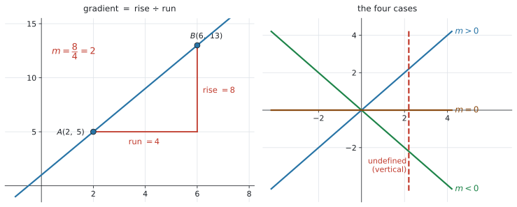
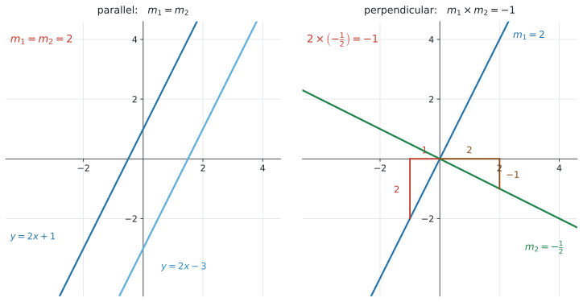
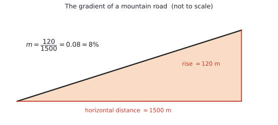

SL 2.1 — Equations of a straight line（直線の方程式）
- gradient（傾き）の意味が分かり、\(2\) 点から求められる。
- 直線の式を、3つの形で書ける。
- \(y = mx + c\)（gradient-intercept form）
- \(ax + by + d = 0\)（general form）
- \(y - y_1 = m(x - x_1)\)（point-gradient form）
- \(x\)-intercept と \(y\)-intercept を求められる。
- parallel（\(m_1 = m_2\)）と perpendicular（gradient がどちらも定義されているとき \(m_1 \times m_2 = -1\)）を判定し、使える。
- 坂道やスロープなどの現実の傾きを求め、問題の文脈で説明できる。
SL 2.1 の欄には、次の4つが印刷されています。
\[ y = mx + c, \qquad ax + by + d = 0, \qquad y - y_1 = m(x - x_1) \]
\[ m = \frac{y_2 - y_1}{x_2 - x_1} \]
この4つは配られるので、覚える必要はありません。 覚えるべきなのは、どういうときにどれを使うかです。
ただし、次の2つは公式集に載っていません。
\[ \text{parallel}: \ m_1 = m_2 \qquad\qquad \text{perpendicular}: \ m_1 \times m_2 = -1 \]
シラバスの Content 欄にだけ書かれています。ここは自分で覚えておく必要があります。 どちらも、\(2\) 本の gradient がどちらも定義されている場合の式です（第4節）。
The idea
1. gradient（傾き）とは
gradient（傾き）は、「横に \(1\) 進んだとき、縦にいくつ変わるか」です。記号は \(m\) を使います。
公式集の式は次のとおりです。
\[ m = \frac{y_2 - y_1}{x_2 - x_1} \tag{1}\]
分子が縦の変化（rise）、分母が横の変化（run）です。

図 1 の左を見てください。\(A(2, 5)\) から \(B(6, 13)\) まで、横に \(4\)、縦に \(8\) 動いています。
\[ m = \frac{13 - 5}{6 - 2} = \frac{8}{4} = 2 \]
横に \(1\) 進むごとに、縦に \(2\) 上がる、という意味です。
符号と、\(4\) つの場合
図 1 の右のように、\(m\) の符号でグラフの向きが決まります。
| \(m\) | グラフ |
|---|---|
| \(m > 0\) | 右上がり |
| \(m < 0\) | 右下がり |
| \(m = 0\) | 水平（\(y = c\) の形） |
| undefined（定義できない） | 垂直（\(x = k\) の形） |
垂直な直線では \(x_2 - x_1 = 0\) になるので、式 1 の分母が \(0\) になります。\(0\) で割ることはできないので、gradient は undefined（定義できない）です。
- \(y = 4\) … 水平。\(m = 0\)
- \(x = 4\) … 垂直。\(m\) は undefined
この2つを取り違える人がとても多いので、いま区別しておいてください。
2. 直線の式は3つの形があります
同じ直線でも、書き方が3通りあります。3つとも公式集にあります。どれを使うかで、解く速さが変わります。
| 形 | 式 | いつ使うか |
|---|---|---|
| gradient-intercept form | \(y = mx + c\) | \(m\) と \(y\)-intercept が見える。電卓にグラフを入れるとき |
| general form | \(ax + by + d = 0\) | 答えの形を指定されたとき。分数を消せる |
| point-gradient form | \(y - y_1 = m(x - x_1)\) | 傾きと \(1\) 点が分かっているとき。一番速い |
point-gradient form が一番速いことが多いです
「傾きが \(2\) で、点 \((2, 5)\) を通る直線」を求めるとします。
\[ y - 5 = 2(x - 2) \]
代入するだけで、もう答えです。展開すれば \(y = 2x + 1\) になります。
\(y = mx + c\) から始めると、\(5 = 2(2) + c\) を解いて \(c = 1\)、と1手間多くなります。 どちらでも正解ですが、point-gradient form のほうが速いことは知っておいてください。
general form への直し方
分数を消して、右辺を \(0\) にします。
\[ y = -\frac{3}{4}x + 6 \]
両辺を \(4\) 倍して、
\[ 4y = -3x + 24 \]
\[ 3x + 4y - 24 = 0 \]
Give your answer in the form ax + by + d = 0 と指示されたら、この形にします。 \(a\)、\(b\)、\(d\) は整数にするのがふつうです。
後の SL 4.4 では、regression line を \(y = ax + b\) と書きます。そちらでは \(a\) が傾きです。
この項目では \(y = mx + c\) で、\(m\) が傾き、\(c\) が \(y\)-intercept です。
同じ「直線の式」なのに、文字の役割が違います。 公式集のどちらの欄を見ているかで判断してください。文字ではなく、位置で覚えるのが安全です（\(x\) に掛かっているほうが傾き）。
3. intercept（切片）
intercept は、グラフが軸と交わる点です。
| 名前 | どこ | 求め方 |
|---|---|---|
| \(y\)-intercept | \(y\) 軸との交点 | \(x = 0\) を代入する |
| \(x\)-intercept | \(x\) 軸との交点 | \(y = 0\) を代入する |
\(y = mx + c\) の形なら、\(c\) がそのまま \(y\)-intercept です。\(x = 0\) を入れると \(y = c\) になるからです。
\(3x + 4y - 24 = 0\) で確かめます。
\[ x = 0 \ \Rightarrow \ 4y = 24 \ \Rightarrow \ y = 6 \qquad (y\text{-intercept は } 6) \]
\[ y = 0 \ \Rightarrow \ 3x = 24 \ \Rightarrow \ x = 8 \qquad (x\text{-intercept は } 8) \]
「\(y\)-intercept を求めよ」で \(x = 0\) を代入する。 名前と、代入する文字が逆なので気をつけてください。
4. parallel と perpendicular
この項目で一番よく出るところです。公式集には載っていないので、覚えてください。

parallel（平行）
\[ m_1 = m_2 \tag{2}\]
傾きが同じなら平行です。図 2 の左では、どちらも \(m = 2\) です。\(y\)-intercept が違うだけで、同じ角度で上がっています。
perpendicular（垂直）
\(2\) 本の直線の gradient がどちらも定義されている場合、
\[ m_1 \times m_2 = -1 \tag{3}\]
なら \(2\) 直線は perpendicular（垂直）です。図 2 の右では \(2 \times \left(-\dfrac{1}{2}\right) = -1\) になっています。
水平な直線 \(y = c\) と、垂直な直線 \(x = k\) も、たがいに垂直です。ところが \(x = k\) の gradient は undefined（第1節）なので、掛け算そのものができません。
たとえば \(y = 2\) と \(x = 4\) は垂直に交わりますが、\(m_1 \times m_2 = -1\) では確かめられません。この組み合わせは、図で見て判断してください。
\(m_1 \neq 0\) で gradient が定義されているとき、垂直な直線の gradient はその場で作れます。
\[ m_2 = -\frac{1}{m_1} \]
やることは2つだけです。
- 分数をひっくり返す（逆数にする）
- 符号を反対にする
| \(m_1\) | \(m_2\)（垂直） |
|---|---|
| \(2\) | \(-\dfrac{1}{2}\) |
| \(-3\) | \(\dfrac{1}{3}\) |
| \(\dfrac{3}{4}\) | \(-\dfrac{4}{3}\) |
| \(-\dfrac{2}{5}\) | \(\dfrac{5}{2}\) |
これを negative reciprocal（負の逆数）といいます。掛けて \(-1\) になるか、必ず確かめてください。
\(m_1 = 2\) のとき、\(m_2 = \dfrac{1}{2}\) ではありません。\(-\dfrac{1}{2}\) です。
\(2 \times \dfrac{1}{2} = 1\) で、\(-1\) になっていません。掛け算で確かめれば、その場で気づけます。
5. 現実の場面での傾き
シラバスに、はっきり書かれています。
Calculate gradients of inclines such as mountain roads, bridges, etc.
AI らしい出題です。坂道、橋、車いす用スロープ、スキー場 ── こうした場面で傾きを求めさせます。

\[ m = \frac{(\text{上がった高さ})}{(\text{水平に進んだ距離})} \tag{4}\]
図 3 では、水平に \(1500\) m 進むあいだに \(120\) m 上がっています。
\[ m = \frac{120}{1500} = 0.08 \]
ここが一番の落とし穴です。
上の例で「\(1.5\) km」と「\(120\) m」をそのまま割ると、
\[ \frac{120}{1.5} = 80 \]
となってしまいます。\(80\) という傾きは、ほぼ真上に登る崖です。おかしいと気づけるはずです。
必ず、どちらも同じ単位に直してから割ってください。\(1.5\) km \(= 1500\) m です。
パーセントで答えることもあります
道路標識では、傾きをパーセントで書きます。\(100\) 倍するだけです。
\[ 0.08 \times 100 = 8\% \]
意味は「水平に \(100\) m 進むと、\(8\) m 上がる」です。
Give your answer as a percentage と書かれていたら \(\%\) を付けて、そうでなければ小数のまま答えてください。
ここで学んだ直線と perpendicular の知識は、SL 3.5 で perpendicular bisector（垂直二等分線）を求めるときに使います。
Why it works
ここでは、なぜ垂直な2直線で \(m_1 \times m_2 = -1\) になるのかだけを説明します。
傾き \(m_1 = 2\) の直線を考えます。この直線に沿って進むと、右に \(1\)、上に \(2\) です。
この直線を、そのまま \(90°\) 回してみます。 「右に \(1\)」だった向きは「上に \(1\)」になり、「上に \(2\)」だった向きは「左に \(2\)」になります。
つまり回したあとは、左に \(2\)、上に \(1\) です。これを傾きに直すと、
\[ m_2 = \frac{(\text{上に } 1)}{(\text{左に } 2)} = \frac{1}{-2} = -\frac{1}{2} \]
図 2 の右の2つの三角形が、まさにこれです。縦と横が入れかわり、向きが1つ反対になる。 だから 逆数にして、符号を変えるのです。
掛けてみると、
\[ 2 \times \left(-\frac{1}{2}\right) = -1 \]
\(m \neq 0\) で gradient が定義されている場合、垂直な直線の gradient は \(-\dfrac{1}{m}\) です。掛ければ \(-1\) になります。
ただし、水平な直線 \(y = c\) と垂直な直線 \(x = k\) もたがいに垂直です。この場合、垂直な直線の gradient は undefined なので、\(m_1 m_2 = -1\) では判定できません。
Worked examples
問題文は英語です。意味が理解できなかったら、問題文の下の「日本語訳」を開いてください。解説は日本語です。
例題 1 The line \(L\) passes through the points \(A(2,\ 5)\) and \(B(6,\ 13)\).
(a) Find the gradient of \(L\).
(b) Find the equation of \(L\) in the form \(y = mx + c\).
(c) Write your answer to part (b) in the form \(ax + by + d = 0\).
日本語訳
直線 \(L\) は \(2\) 点 \(A(2,\ 5)\) と \(B(6,\ 13)\) を通ります。
(a) \(L\) の傾きを求めなさい。
(b) \(L\) の式を \(y = mx + c\) の形で求めなさい。
(c) (b) の答えを \(ax + by + d = 0\) の形で書きなさい。
(a) 公式集の式に代入します。
\[ m = \frac{y_2 - y_1}{x_2 - x_1} = \frac{13 - 5}{6 - 2} = \frac{8}{4} = 2 \]
\(A\) と \(B\) のどちらを「\(1\)」にしても構いません。 逆にしても \(\dfrac{5-13}{2-6} = \dfrac{-8}{-4} = 2\) で、同じ答えです。上と下で順番をそろえることだけが条件です。
(b) point-gradient form を使います。\(A(2, 5)\) を使いましょう。
\[ y - 5 = 2(x - 2) \]
展開して、
\[ y - 5 = 2x - 4 \]
\[ y = 2x + 1 \]
検算。 \(B(6, 13)\) を入れてみます。\(2(6) + 1 = 13\) ✓ もう一方の点で必ず確かめてください。
(c) 右辺を \(0\) にします。
\[ 2x - y + 1 = 0 \]
(a) \(m = \dfrac{13 - 5}{6 - 2} = 2\)
(b) \(y - 5 = 2(x - 2)\)
\[y = 2x + 1\]
(c) \(2x - y + 1 = 0\)
例題 2 A line has equation \(3x + 4y - 24 = 0\).
(a) Find the gradient of the line.
(b) Find the coordinates of the \(x\)-intercept and the \(y\)-intercept.
日本語訳
ある直線の式は \(3x + 4y - 24 = 0\) です。
(a) この直線の傾きを求めなさい。
(b) \(x\) 切片と \(y\) 切片の座標を求めなさい。
（coordinates は「座標」です。\((8,\ 0)\) のように書きます。）
(a) general form のままでは傾きが見えません。 まず \(y = mx + c\) の形に直します。
\[ 4y = -3x + 24 \]
\[ y = -\frac{3}{4}x + 6 \]
\[ m = -\frac{3}{4} \]
\(x\) に掛かっている数が傾きです（文字ではなく位置で覚えます）。
(b) それぞれ \(0\) を代入します。もとの式のままで構いません。
\(y\)-intercept … \(x = 0\) を入れます。
\[ 4y - 24 = 0 \ \Rightarrow \ y = 6 \]
\(x\)-intercept … \(y = 0\) を入れます。
\[ 3x - 24 = 0 \ \Rightarrow \ x = 8 \]
coordinates（座標）と聞かれているので、\(( \ , \ )\) の形で答えます。
\[ x\text{-intercept}: (8,\ 0), \qquad y\text{-intercept}: (0,\ 6) \]
\(8\) と \(6\) だけ書くと減点されることがあります。 何を聞かれているか、最後にもう一度読んでください。
(a) \(4y = -3x + 24\), so \(y = -\dfrac{3}{4}x + 6\)
\[m = -\frac{3}{4}\]
(b) \(x = 0 \Rightarrow y = 6\), so the \(y\)-intercept is \((0,\ 6)\)
\(y = 0 \Rightarrow x = 8\), so the \(x\)-intercept is \((8,\ 0)\)
例題 3 The line \(L_1\) has equation \(y = 3x - 4\). The point \(P\) has coordinates \((2,\ 5)\).
(a) Find the equation of the line through \(P\) that is parallel to \(L_1\).
(b) Find the equation of the line through \(P\) that is perpendicular to \(L_1\), giving your answer in the form \(ax + by + d = 0\).
日本語訳
直線 \(L_1\) の式は \(y = 3x - 4\) です。点 \(P\) の座標は \((2,\ 5)\) です。
(a) \(P\) を通り、\(L_1\) に平行な直線の式を求めなさい。
(b) \(P\) を通り、\(L_1\) に垂直な直線の式を、\(ax + by + d = 0\) の形で求めなさい。
\(L_1\) は \(y = mx + c\) の形なので、傾きは \(3\) だとすぐ読めます。
(a) 平行なら傾きは同じです。
\[ m = 3 \]
\(P(2, 5)\) を通るので、point-gradient form に入れます。
\[ y - 5 = 3(x - 2) \]
\[ y = 3x - 1 \]
(b) 垂直なら negative reciprocal です。
\[ m = -\frac{1}{3} \]
検算。 \(3 \times \left(-\dfrac{1}{3}\right) = -1\) ✓
\[ y - 5 = -\frac{1}{3}(x - 2) \]
ax + by + d = 0 を指定されているので、分数を消してから進めます。両辺を \(3\) 倍します。
\[ 3(y - 5) = -(x - 2) \]
\[ 3y - 15 = -x + 2 \]
\[ x + 3y - 17 = 0 \]
検算。 \(P(2, 5)\) を入れます。\(2 + 3(5) - 17 = 2 + 15 - 17 = 0\) ✓
(a) Parallel, so \(m = 3\).
\[y - 5 = 3(x - 2), \quad \text{so} \quad y = 3x - 1\]
(b) Perpendicular, so \(m = -\dfrac{1}{3}\) (since \(3 \times \left(-\dfrac{1}{3}\right) = -1\)).
\[y - 5 = -\frac{1}{3}(x - 2)\]
\[3y - 15 = -x + 2\]
\[x + 3y - 17 = 0\]
例題 4 A mountain road rises \(120\) metres over a horizontal distance of \(1.5\) km.
(a) Find the gradient of the road.
(b) Write the gradient as a percentage.
(c) Interpret this percentage in the context of the road.
A wheelchair ramp must have a gradient of at most \(\dfrac{1}{12}\). A ramp is needed to rise \(0.4\) m.
(d) Find the shortest horizontal distance the ramp can have.
日本語訳
ある山道は、水平に \(1.5\) km 進むあいだに \(120\) m 上がります。
(a) この道の傾きを求めなさい。
(b) その傾きをパーセントで書きなさい。
(c) このパーセントの意味を、道の文脈で説明しなさい。
車いす用のスロープは、傾きが \(\dfrac{1}{12}\) 以下でなければなりません。\(0.4\) m 上がるスロープが必要です。
(d) このスロープに必要な、最も短い水平距離を求めなさい。
（at most は「〜以下」、ramp は「スロープ」です。）
(a) まず単位をそろえます（ここが落とし穴）。
\[ 1.5 \ \text{km} = 1500 \ \text{m} \]
\[ m = \frac{120}{1500} = 0.08 \]
(b) \(100\) 倍します。
\[ 0.08 \times 100 = 8\% \]
(c) Interpret なので、言葉で説明します。
試験ではこう書く
For every \(100\) metres travelled horizontally, the road rises \(8\) metres.
（意味：水平に \(100\) m 進むごとに、道は \(8\) m 上がる。）
「傾きが \(8\%\) です」だけでは点になりません。 何が、どれだけ変わるのかを書いてください。
(d) 傾きが \(\dfrac{1}{12}\) 以下なので、水平距離が短いほど傾きは急になります。ちょうど \(\dfrac{1}{12}\) のときが、いちばん短い場合です。
\[ \frac{0.4}{d} = \frac{1}{12} \]
\[ d = 0.4 \times 12 = 4.8 \ \text{m} \]
\(4.8\) m 以上必要、ということです。
(a) \(1.5\) km \(= 1500\) m
\[m = \frac{120}{1500} = 0.08\]
(b) \(0.08 \times 100 = 8\%\)
(c) For every \(100\) metres travelled horizontally, the road rises \(8\) metres.
(d) \(\dfrac{0.4}{d} = \dfrac{1}{12}\), so \(d = 4.8\) m
例題 5 A candle burns at a constant rate. After \(2\) hours its height is \(18\) cm, and after \(5\) hours its height is \(10.5\) cm. Let \(h\) be the height in cm after \(t\) hours.
(a) Find a linear equation for \(h\) in terms of \(t\).
(b) Interpret the gradient in the context of the candle.
(c) Write down the height of the candle before it was lit.
(d) Find how long the candle takes to burn out completely.
日本語訳
あるろうそくが一定の速さで燃えています。\(2\) 時間後の高さは \(18\) cm、\(5\) 時間後の高さは \(10.5\) cm です。\(t\) 時間後の高さを \(h\)（cm）とします。
(a) \(h\) を \(t\) で表す1次式を求めなさい。
(b) 傾きの意味を、ろうそくの文脈で説明しなさい。
(c) 火をつける前のろうそくの高さを書きなさい。
(d) ろうそくが完全に燃えつきるまでの時間を求めなさい。
（at a constant rate は「一定の速さで」、burn out は「燃えつきる」です。）
(a) \(2\) つの点 \((2,\ 18)\) と \((5,\ 10.5)\) が与えられている、と読みかえます。横軸が \(t\)、縦軸が \(h\) です。
\[ m = \frac{10.5 - 18}{5 - 2} = \frac{-7.5}{3} = -2.5 \]
負の値です。ろうそくは短くなっていくので、これで合っています。
\[ h - 18 = -2.5(t - 2) \]
\[ h = -2.5t + 23 \]
(b) Interpret なので、言葉で書きます。
試験ではこう書く
The candle burns down by \(2.5\) cm each hour.
（意味：ろうそくは \(1\) 時間あたり \(2.5\) cm ずつ短くなる。）
符号を「短くなる」という言葉に直してください。 「傾きは \(-2.5\) です」だけでは足りません。
(c) 火をつける前は \(t = 0\) です。
\[ h = -2.5(0) + 23 = 23 \ \text{cm} \]
これは \(y\)-intercept そのものです。\(h = -2.5t + 23\) の \(23\) を読むだけで済みます。
(d) 燃えつきるのは \(h = 0\) のときです。
\[ 0 = -2.5t + 23 \]
\[ 2.5t = 23 \]
\[ t = 9.2 \ \text{hours} \]
これは \(x\)-intercept（この問題では \(t\)-intercept）です。
(a) \(m = \dfrac{10.5 - 18}{5 - 2} = -2.5\)
\[h - 18 = -2.5(t - 2), \quad \text{so} \quad h = -2.5t + 23\]
(b) The candle burns down by \(2.5\) cm each hour.
(c) \(h = 23\) cm
(d) \(0 = -2.5t + 23\), so \(t = 9.2\) hours
Common errors
\(m = \dfrac{y_2 - y_1}{x_2 - x_1}\) です。\(y\) が上、\(x\) が下。
「rise over run」（縦を横で割る）と覚えてください。逆にすると、答えが逆数になります。
上を \(y_2 - y_1\) にしたら、下も \(x_2 - x_1\) です。
\(\dfrac{y_2 - y_1}{x_1 - x_2}\) のように片方だけ逆にすると、符号が反対になります。
どちらの点を「\(1\)」にしてもよいのですが、上下でそろえることが条件です。
\(m_1 = 2\) に垂直なのは \(-\dfrac{1}{2}\) です。\(\dfrac{1}{2}\) ではありません。
掛けて \(-1\) になるか、必ず確かめてください。 \(10\) 秒で確かめられます。
\(x = 4\) は垂直なので、傾きは undefined です。
\(y = 4\)（水平）のほうが \(m = 0\) です。文字がどちらに付いているかを見てください。
\(3x + 4y - 24 = 0\) の傾きは \(3\) でも \(-3\) でもありません。
まず \(y = mx + c\) の形に直してから読んでください。この例では \(-\dfrac{3}{4}\) です。
- \(y\)-intercept を求めるなら \(x = 0\)
- \(x\)-intercept を求めるなら \(y = 0\)
名前と、代入する文字が逆です。ここは意識して覚えてください。
\(120\) m と \(1.5\) km をそのまま割ってはいけません。
\(1.5\) km \(= 1500\) m に直してから割ります。単位がずれると、答えが \(1000\) 倍ずれます。
Interpret や Comment on が付いていたら、言葉が必要です。
「\(m = -2.5\)」ではなく、「\(1\) 時間あたり \(2.5\) cm ずつ短くなる」まで書いてください。単位も付けてください。
Using your GDC (TI-Nspire CX II)
この項目は、手で計算するほうが速い場面が多いです。電卓は検算とグラフの確認に使ってください。
直線をグラフにする
ctrl + doc → 2: Add Graphsf1(x) = のところに式を入れます。
f1(x) = 2x + 1Graphs のページは \(y =\) の形しか受け付けません。
\(3x + 4y - 24 = 0\) を入れたいときは、先に \(y = -\dfrac{3}{4}x + 6\) に直してから打ち込んでください。
この「直す」作業は、どのみち傾きを読むために必要です。
画面に収まらないときは、
menu → Window/Zoom → Zoom - Fit求めた式を確かめる
答えを出したあと、\(30\) 秒でできる検算です。
- 求めた式を
f1(x)に入れる - 通るはずの点が、グラフの上に乗っているか見る
より確実にするなら、計算ページで点を代入します。\(P(2, 5)\) を通るはずなら、
2 × 2 + 1と打って \(5\) が出れば正しい、という具合です。手で代入するのと同じことですが、打ち間違いが減ります。
2直線の交わる点
\(2\) 本を f1(x)、f2(x) に入れて、
menu → Analyze Graph → Intersection交点の左と右を指定すると、座標が出ます。lower bound? と upper bound? の \(2\) 回、enter を押します（→ SL 2.4）。
SL 1.8 でやった方程式を解く機能でも同じ答えが出ます。どちらでも構いません。
垂直かどうかを目で確かめるとき
画面の縦横の比率がそろっていないと、垂直に見えません。
menu → Window/Zoom → Zoom - Squareこれで縦横の目盛りがそろい、直角がちゃんと直角に見えます。 図 2 の右も、この比率でかいてあります。
ただし、gradient がどちらも定義されているなら、判定は \(m_1 \times m_2 = -1\) でしてください。 見た目で決めてはいけません。\(y = c\) と \(x = k\) の組だけは、この式が使えないので図で判断します。
Exercises
各問題に、折りたたみが3つ付いています。日本語訳、解答例（答案用紙に書くべきこと。英語です）、解説（なぜそうなるか。日本語です）。
まず自分で解いて、次に解答例と見くらべてください。解説は、合わなかったときだけ開けば十分です。
1 Find the gradient of the line passing through the points \((3,\ -1)\) and \((7,\ 5)\).
日本語訳
\(2\) 点 \((3,\ -1)\) と \((7,\ 5)\) を通る直線の傾きを求めなさい。
\[m = \frac{5 - (-1)}{7 - 3} = \frac{6}{4} = \frac{3}{2}\]
公式集の式に入れるだけです。
\(-1\) を引くところに気をつけてください。\(5 - (-1) = 5 + 1 = 6\) です。カッコを付けて書くと、符号を間違えません。
\[\frac{6}{4} = \frac{3}{2} = 1.5\]
分数のままでも小数でも正解です。分数のほうが、あとで計算に使いやすくなります。
2 A line has gradient \(-3\) and passes through the point \((-1,\ 4)\).
(a) Find its equation in the form \(y = mx + c\).
(b) Write your answer in the form \(ax + by + d = 0\).
日本語訳
ある直線は傾きが \(-3\) で、点 \((-1,\ 4)\) を通ります。
(a) その式を \(y = mx + c\) の形で求めなさい。
(b) 答えを \(ax + by + d = 0\) の形で書きなさい。
(a) \(y - 4 = -3(x - (-1))\)
\[y - 4 = -3(x + 1)\]
\[y = -3x + 1\]
(b) \(3x + y - 1 = 0\)
(a) point-gradient form に入れます。\(x_1 = -1\) なので、\(x - (-1) = x + 1\) になります。ここが引っかかりやすいところです。
\[y - 4 = -3(x + 1) = -3x - 3\]
\[y = -3x + 1\]
検算。 \(x = -1\) を入れると \(-3(-1) + 1 = 4\) ✓
(b) \(3x\) と \(-1\) を左辺へ移します。
\[3x + y - 1 = 0\]
\(a\) を正にするのがふつうです。\(-3x - y + 1 = 0\) も同じ直線ですが、\(a > 0\) の形が読みやすいです。
3 A line has equation \(5x - 2y + 10 = 0\).
(a) Find the gradient.
(b) Find the \(y\)-intercept.
(c) Find the \(x\)-intercept.
日本語訳
ある直線の式は \(5x - 2y + 10 = 0\) です。
(a) 傾きを求めなさい。
(b) \(y\) 切片を求めなさい。
(c) \(x\) 切片を求めなさい。
(a) \(2y = 5x + 10\), so \(y = \dfrac{5}{2}x + 5\)
\[m = \frac{5}{2}\]
(b) \(x = 0 \Rightarrow y = 5\)
(c) \(y = 0 \Rightarrow x = -2\)
(a) \(y\) について解きます。\(-2y\) を右に移すと符号が変わります。
\[5x + 10 = 2y \quad \Rightarrow \quad y = \frac{5}{2}x + 5\]
\(-\dfrac{5}{2}\) としないように。 移項で符号が変わることを、ゆっくり確かめてください。
(b) \(y = \dfrac{5}{2}x + 5\) の \(5\) がそのまま \(y\)-intercept です。
(c) \(y = 0\) を入れます。
\[0 = \frac{5}{2}x + 5 \quad \Rightarrow \quad \frac{5}{2}x = -5 \quad \Rightarrow \quad x = -2\]
もとの式で確かめると \(5(-2) - 0 + 10 = 0\) ✓
4 Find the equation of the line that passes through \((4,\ -2)\) and is parallel to the line \(y = -\dfrac{1}{2}x + 7\).
日本語訳
点 \((4,\ -2)\) を通り、直線 \(y = -\dfrac{1}{2}x + 7\) に平行な直線の式を求めなさい。
Parallel, so \(m = -\dfrac{1}{2}\).
\[y - (-2) = -\frac{1}{2}(x - 4)\]
\[y + 2 = -\frac{1}{2}x + 2\]
\[y = -\frac{1}{2}x\]
平行なら傾きは同じなので、\(m = -\dfrac{1}{2}\) です。\(7\) は関係ありません。
\(y_1 = -2\) なので、\(y - (-2) = y + 2\) になります。
\[y + 2 = -\frac{1}{2}(x - 4) = -\frac{1}{2}x + 2\]
\[y = -\frac{1}{2}x\]
\(c = 0\) になりました。 原点を通る直線です。\(0\) が出ても間違いではありません。
検算。 \(x = 4\) を入れると \(-\dfrac{1}{2}(4) = -2\) ✓
5 Find the equation of the line that passes through \((3,\ 1)\) and is perpendicular to the line \(y = 4x - 5\). Give your answer in the form \(ax + by + d = 0\).
日本語訳
点 \((3,\ 1)\) を通り、直線 \(y = 4x - 5\) に垂直な直線の式を、\(ax + by + d = 0\) の形で求めなさい。
Perpendicular, so \(m = -\dfrac{1}{4}\) (since \(4 \times \left(-\dfrac{1}{4}\right) = -1\)).
\[y - 1 = -\frac{1}{4}(x - 3)\]
\[4(y - 1) = -(x - 3)\]
\[4y - 4 = -x + 3\]
\[x + 4y - 7 = 0\]
\(m_1 = 4\) なので、ひっくり返して符号を変えて \(m_2 = -\dfrac{1}{4}\)。
検算。 \(4 \times \left(-\dfrac{1}{4}\right) = -1\) ✓
ax + by + d = 0 を指定されているので、分数を先に消します。 両辺を \(4\) 倍するのが一番速いです。
\[4y - 4 = -x + 3 \quad \Rightarrow \quad x + 4y - 7 = 0\]
検算。 \((3, 1)\) を入れると \(3 + 4 - 7 = 0\) ✓
小数にしないでください。 \(-0.25\) で計算すると、あとで分数に戻すのが面倒になります。
6 Two lines have equations \(2x - 3y + 6 = 0\) and \(3x + 2y - 12 = 0\).
Determine whether the lines are parallel, perpendicular, or neither, showing your working.
日本語訳
\(2\) 本の直線の式が \(2x - 3y + 6 = 0\) と \(3x + 2y - 12 = 0\) です。
この \(2\) 直線が平行か、垂直か、どちらでもないかを、途中を示して判定しなさい。
（Determine は「判定して答えを出す」、showing your working は「途中の計算を書く」という指示です。）
\(2x - 3y + 6 = 0 \Rightarrow y = \dfrac{2}{3}x + 2\), so \(m_1 = \dfrac{2}{3}\)
\(3x + 2y - 12 = 0 \Rightarrow y = -\dfrac{3}{2}x + 6\), so \(m_2 = -\dfrac{3}{2}\)
\[m_1 \times m_2 = \frac{2}{3} \times \left(-\frac{3}{2}\right) = -1\]
The lines are perpendicular.
両方とも general form なので、まず \(y = mx + c\) に直します。ここを飛ばすと比べられません。
\[m_1 = \frac{2}{3}, \qquad m_2 = -\frac{3}{2}\]
分子と分母が入れかわって、符号が反対になっています。これは negative reciprocal の形そのものです。
\[\frac{2}{3} \times \left(-\frac{3}{2}\right) = -\frac{6}{6} = -1\]
showing your working があるので、この掛け算の1行を必ず書いてください。 「垂直です」だけでは点になりません。
最後に The lines are perpendicular. と言葉でも書くと、聞かれたことに答えた形になります。
7 A ski slope descends \(450\) metres over a horizontal distance of \(3\) km.
(a) Find the gradient of the slope.
(b) Write the gradient as a percentage, and interpret it in context.
日本語訳
あるスキー場の斜面は、水平に \(3\) km 進むあいだに \(450\) m 下ります。
(a) この斜面の傾きを求めなさい。
(b) その傾きをパーセントで書き、文脈の中で意味を説明しなさい。
（descends は「下る」です。）
(a) \(3\) km \(= 3000\) m
\[m = \frac{-450}{3000} = -0.15\]
(b) \(-0.15 \times 100 = -15\%\)
For every \(100\) metres travelled horizontally, the slope drops \(15\) metres.
(a) まず単位をそろえます。 \(3\) km \(= 3000\) m。
下るので符号は負です。
\[m = \frac{-450}{3000} = -0.15\]
(b) \(-15\%\)。意味は「水平に \(100\) m 進むと \(15\) m 下がる」です。
符号を「下がる」という言葉に直してください。 drops や descends を使えば、マイナスを言葉で表せます。
8 A wheelchair ramp must not have a gradient greater than \(\dfrac{1}{15}\). A ramp is required to rise \(0.75\) m.
Find the minimum horizontal distance the ramp must have.
日本語訳
車いす用のスロープは、傾きが \(\dfrac{1}{15}\) より大きくてはいけません。\(0.75\) m 上がるスロープが必要です。
スロープに必要な最小の水平距離を求めなさい。
（minimum は「最小の」です。）
\[\frac{0.75}{d} = \frac{1}{15}\]
\[d = 0.75 \times 15 = 11.25 \text{ m}\]
傾きは \(\dfrac{(\text{上がる高さ})}{(\text{水平距離})}\) です（式 4）。
水平距離 \(d\) が短いほど、傾きは急になります。ですから 「傾きがちょうど \(\dfrac{1}{15}\) のとき」が、いちばん短い場合です。
\[\frac{0.75}{d} = \frac{1}{15} \quad \Rightarrow \quad d = 0.75 \times 15 = 11.25\]
単位を付けて \(11.25\) m と答えてください。
\(0.75 \div 15 = 0.05\) としないように。 求めているのは傾きではなく距離です。\(d\) が分母にあることを、図でも確かめてください。
9 A student writes: “The line \(x = 4\) has gradient \(0\), because it does not go up or down.”
Explain why this statement is not correct, and state the gradient of the line \(y = 4\).
日本語訳
ある生徒が「直線 \(x = 4\) は上りも下りもしないので、傾きは \(0\) である」と書きました。
この主張が正しくない理由を説明し、直線 \(y = 4\) の傾きを述べなさい。
（本書オリジナルの問題です。）
The line \(x = 4\) is vertical, not horizontal. For any two points on it, \(x_2 - x_1 = 0\), so the gradient formula has a denominator of zero and the gradient is undefined, not \(0\).
The line \(y = 4\) is horizontal, and its gradient is \(0\).
\(x = 4\) は、\(x\) がいつも \(4\) の点の集まりです。\((4, 0)\)、\((4, 1)\)、\((4, 7)\) … と、縦にまっすぐ並びます。
この \(2\) 点で公式集の式を使うと、
\[m = \frac{1 - 0}{4 - 4} = \frac{1}{0}\]
\(0\) で割ることはできません。 ですから傾きは undefined（定義できない）です。
いっぽう \(y = 4\) は \((0, 4)\)、\((5, 4)\) … と横に並ぶので、
\[m = \frac{4 - 4}{5 - 0} = \frac{0}{5} = 0\]
こちらはきちんと \(0\) です。
答案には undefined という語を使ってください。 「ない」では伝わりません。
10 A print shop charges a fixed set-up cost plus a cost for each copy. Printing \(100\) copies costs \(\$65\), and printing \(250\) copies costs \(\$110\). Let \(C\) be the cost in dollars of printing \(n\) copies.
(a) Find a linear equation for \(C\) in terms of \(n\).
(b) Interpret the gradient in the context of the print shop.
(c) Interpret the \(C\)-intercept in the context of the print shop.
(d) Find the cost of printing \(400\) copies.
(e) A customer has \(\$200\) to spend. Find the greatest number of copies they can print.
日本語訳
ある印刷店は、決まった準備費に加えて、\(1\) 枚ごとの料金をとります。\(100\) 枚の印刷は \(\$65\)、\(250\) 枚の印刷は \(\$110\) かかります。\(n\) 枚印刷したときの費用（ドル）を \(C\) とします。
(a) \(C\) を \(n\) で表す1次式を求めなさい。
(b) 傾きの意味を、印刷店の文脈で説明しなさい。
(c) \(C\) 切片の意味を、印刷店の文脈で説明しなさい。
(d) \(400\) 枚印刷する費用を求めなさい。
(e) ある客は \(\$200\) を使えます。印刷できる最大の枚数を求めなさい。
（fixed set-up cost は「決まった準備費」、greatest は「最大の」です。）
(a) \(m = \dfrac{110 - 65}{250 - 100} = \dfrac{45}{150} = 0.3\)
\[C - 65 = 0.3(n - 100)\]
\[C = 0.3n + 35\]
(b) Each extra copy costs \(\$0.30\) to print.
(c) The fixed set-up cost is \(\$35\), charged even if no copies are printed.
(d) \(C = 0.3(400) + 35 = \$155\)
(e) \(200 = 0.3n + 35\), so \(0.3n = 165\) and \(n = 550\) copies.
(a) \(2\) 点 \((100,\ 65)\) と \((250,\ 110)\) が与えられている、と読みかえます。
\[m = \frac{45}{150} = 0.3\]
point-gradient form に入れて、
\[C - 65 = 0.3(n - 100) = 0.3n - 30\]
\[C = 0.3n + 35\]
検算。 \(n = 250\) を入れると \(0.3(250) + 35 = 75 + 35 = 110\) ✓
(b)(c) この2つが、AI で一番点差がつくところです。
- 傾き \(0.3\) … \(n\) が \(1\) 増えるごとに \(C\) が \(0.3\) 増える → \(1\) 枚あたり \(\$0.30\)
- 切片 \(35\) … \(n = 0\) のときの \(C\) → \(1\) 枚も刷らなくてもかかる費用、つまり準備費
必ず単位を付けてください。
(d) 代入するだけです。
\[0.3(400) + 35 = 120 + 35 = 155\]
(e) 今度は逆向きで、\(C = 200\) から \(n\) を求めます。
\[200 = 0.3n + 35 \quad \Rightarrow \quad 0.3n = 165 \quad \Rightarrow \quad n = 550\]
ちょうど \(550\) 枚になりました。割り切れないときは、枚数なので切り捨てます（\(\$200\) を超えてはいけないからです）。